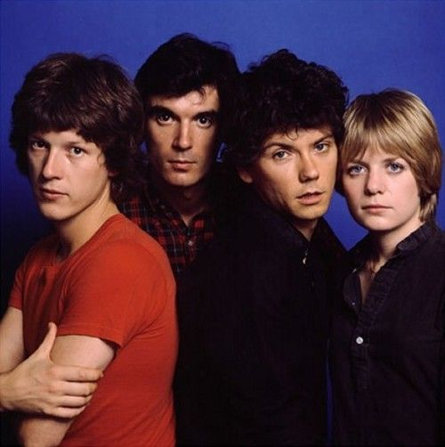

by Saricyclopedia the Amateur Encyclopedia
Talking Heads were an American rock band formed in 1975 in New York City and active until 1991. The band consisted of David Byrne, Chris Frantz, Tina Weymouth, and Jerry Harrison. They were seen a prolific part of the punk movement as well as one of the most popular bands of the 1980s, helping to push the new wave genre into mass popularity.
In 1973, Rhode Island School of Design students David Byrne (guitar and vocals) and Chris Frantz (drums) formed a band, the Artistics. Fellow student Tina Weymouth, Frantz's girlfriend, often provided transportation. The Artistics dissolved the following year, and the three moved to New York City, eventually sharing a communal loft. After they were unable to find a bassist, Weymouth took up the role. Frantz encouraged Weymouth to learn to play bass by listening to Suzi Quatro albums. Byrne asked Weymouth to audition three times before she joined the band.
The band played their first gig as Talking Heads opening for the Ramones at CBGB on June 5, 1975. According to Weymouth, the name Talking Heads came from an issue of TV Guide, which "explained the term used by TV studios to describe a head-and-shoulder shot of a person talking as 'all content, no action'. It fit." Later that year, the band recorded a series of demos for CBS, but did not receive a record contract. However, they drew a following and signed to Sire Records in November 1976. They released their first single in February the following year, "Love → Building on Fire". In March 1977, they added Jerry Harrison, formerly of Jonathan Richman's band the Modern Lovers, on keyboards, guitar, and backing vocals.
The first Talking Heads album, Talking Heads: 77, received acclaim and produced their first charting single, "Psycho Killer". Many connected the song to the serial killer known as the Son of Sam, who had been terrorizing New York City months earlier; however, Byrne said he had written the song years prior. Weymouth and Frantz married in 1977.
More Songs About Buildings and Food (1978) was Talking Heads' first collaboration with producer Brian Eno, who had previously worked with Roxy Music, David Bowie, John Cale and Robert Fripp; the title of Eno's 1977 song "King's Lead Hat" is an anagram of the band's name. Eno's unusual style meshed with the group's artistic sensibilities, and they began to explore an increasingly diverse range of musical directions, from post-punk to psychedelic funk to African music, influenced prominently by Fela Kuti and Parliament-Funkadelic. This recording also established the band's relationship with Compass Point Studios in Nassau, Bahamas. More Songs About Buildings and Food included a cover of Al Green's "Take Me to the River". This broke Talking Heads into the general public's consciousness and gave the band their first Billboard Top 30 hit.
The collaboration continued with Fear of Music (1979), with the darker stylings of post-punk rock, mixed with white funkadelia and subliminal references to the geopolitical instability of the late 1970s. Music journalist Simon Reynolds cited Fear of Music as representing the Eno-Talking Heads collaboration "at its most mutually fruitful and equitable". The single "Life During Wartime" produced the catchphrase "This ain't no party, this ain't no disco." The song refers to the Mudd Club and CBGB, two popular New York nightclubs of the time.
Remain in Light (1980) was heavily influenced by the afrobeat of Nigerian bandleader Fela Kuti, whose music Eno had introduced to the band. It explored West African polyrhythms, weaving these together with Arabic music from North Africa, disco funk, and "found" voices. These combinations foreshadowed Byrne's later interest in world music. In order to perform these more complex arrangements, the band toured with an expanded group, including Adrian Belew and Bernie Worrell, among others, first at the Heatwave festival in August, and later in their concert film Stop Making Sense.
During this period, Tina Weymouth and Chris Frantz also formed a commercially successful splinter group, Tom Tom Club, influenced by the foundational elements of hip hop, and Harrison released his first solo album, The Red and the Black.
Likewise, Byrne—in collaboration with Eno—released My Life in the Bush of Ghosts, which incorporated world music and found sounds, as well as including a number of other prominent international and post-punk musicians. All were released by Sire.
Remain in Light's lead single, "Once in a Lifetime", became a Top 20 hit in the UK, but initially failed to make an impression in the USA. It grew into a popular standard over the next few years on the strength of its music video, which was named one of Time's All-TIME Best Music Videos.
After releasing four albums in barely four years, the group went into hiatus, and nearly three years passed before their next release, although Frantz and Weymouth continued to record with the Tom Tom Club. In the meantime, Talking Heads released a live album The Name of This Band Is Talking Heads, toured the United States and Europe as an eight-piece group, and parted ways with Eno, who went on to produce albums with U2.
1983 saw the release of Speaking in Tongues, a commercial breakthrough that produced the band's only American Top 10 hit, "Burning Down the House".[38] Once again, a striking video was inescapable owing to its heavy rotation on MTV. The following tour was documented in Jonathan Demme's Stop Making Sense, which generated another live album of the same name. The tour in support of Speaking in Tongues was their last.
In December 1991, Talking Heads announced that they had disbanded. Frantz said that he learned that Byrne had left from an article in the Los Angeles Times, and said: "As far as we're concerned, the band never really broke up. David just decided to leave." Their final release was "Sax and Violins", an original song that had appeared earlier that year on the soundtrack to Wim Wenders' Until the End of the World. Byrne continued his solo career, releasing Rei Momo in 1989 and The Forest in 1991. This period also saw a revived flourish from both Tom Tom Club (Boom Boom Chi Boom Boom and Dark Sneak Love Action) and Harrison (Casual Gods and Walk on Water), who toured together in 1990.
Weymouth, Frantz, and Harrison toured without Byrne as Shrunken Heads in the early 90s. In 1996, they released an album, No Talking, Just Head, under the name the Heads. The album featured a number of vocalists, including Gavin Friday of The Virgin Prunes, Debbie Harry of Blondie, Johnette Napolitano of Concrete Blonde, Andy Partridge of XTC, Gordon Gano of Violent Femmes, Michael Hutchence of INXS, Ed Kowalczyk of Live, Shaun Ryder of Happy Mondays, Richard Hell, and Maria McKee. It was accompanied by a tour with Napolitano as the vocalist. Byrne took legal action to prevent the band using the name The Heads, which he saw as "a pretty obvious attempt to cash in on the Talking Heads name". The band briefly reunited in 1999 to promote the 15th anniversary re-release of Stop Making Sense, but did not perform together.
Harrison produced records including the Violent Femmes' The Blind Leading the Naked, the Fine Young Cannibals' The Raw and the Cooked, General Public's Rub It Better, Crash Test Dummies' God Shuffled His Feet, Live's Mental Jewelry, Throwing Copper and The Distance to Here, No Doubt's song "New" from Return of Saturn. Frantz and Weymouth have produced several artists, including Happy Mondays and Ziggy Marley. The Tom Tom Club continue to record and tour intermittently.
Talking Heads reunited to play "Life During Wartime", "Psycho Killer", and "Burning Down the House" on March 18, 2002, at the ceremony of their induction into the Rock and Roll Hall of Fame, joined on stage by former touring members Bernie Worrell and Steve Scales.[57] Byrne said further work together was unlikely, due to "bad blood" and being musically "miles apart".[58] Weymouth has been critical of Byrne, describing him as "a man incapable of returning friendship" and saying that he doesn't "love" her, Frantz, and Harrison.
AllMusic stated that Talking Heads, one of the most celebrated bands of the 1970s and 1980s, by the time of their breakup "had recorded everything from art-funk to polyrhythmic worldbeat explorations and simple, melodic guitar pop". Talking Heads' art pop innovations have had a long-lasting impact. Along with other groups such as Devo, Ramones, and Blondie, they helped define the new wave genre in the United States. Meanwhile, their more cosmopolitan hits like 1980's Remain in Light helped bring African rock to the western world. Their 1984 concert film Stop Making Sense, directed by Jonathan Demme, is considered one of the best concert films ever released.
Talking Heads have been cited as an influence by many artists, including Eddie Vedder, LCD Soundsystem, Foals, the Weeknd, Vampire Weekend, Primus, Bell X1, the 1975, the Ting Tings, Nelly Furtado, Kesha, St. Vincent, Danny Brown, Trent Reznor, Franz Ferdinand and Radiohead, who took their name from the Talking Heads song "Radio Head" from the 1986 album True Stories. The Italian filmmaker and director Paolo Sorrentino, in receiving the Oscar for his film La Grande Bellezza in 2014, thanked Talking Heads, among others, as his sources of inspiration.